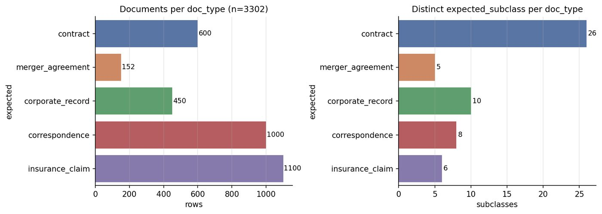
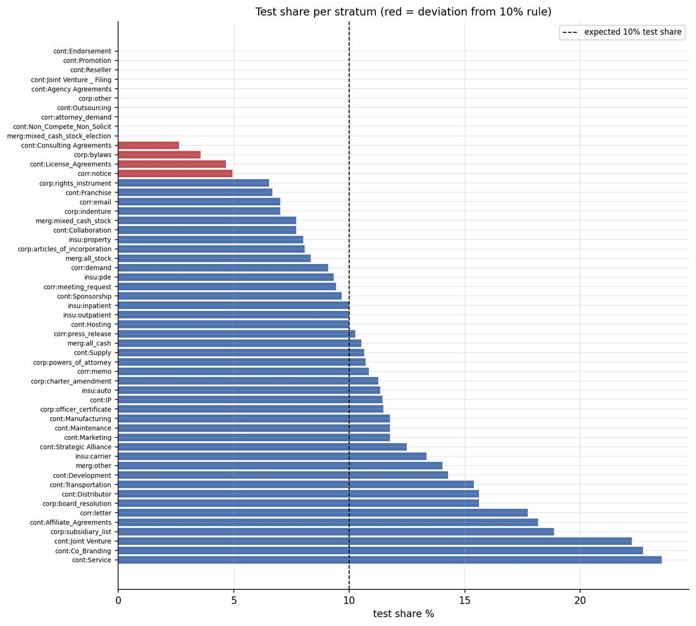

Mailroom-Corpus-EDA
Data engineering · dataset build, audit & publishing
The mailroom projects all depend on one dataset. This repository is how I built it from public sources, cleaned it, checked it, and published it without letting the labels leak.
At a glance
3,302 documents in 5 classes and 55 strata, from CUAD, MAUD, SEC EDGAR, Enron email and four insurance sources
13,753 of 13,753 contract clause annotations whose character offsets match the document text exactly
7 pipeline phases, from download to a correspondence-intent audit, rerun with one command
The problem
I could not find a public dataset that looks like a mailroom: contracts, merger agreements, corporate filings, emails and insurance claims arriving together. The only way to get one was to assemble it from sources that were never meant to sit side by side. They differ in format, licence, labelling, length and quality.
Assembling the pieces is the smaller job. The harder part is being able to say, for every document, where it came from, what its label means, who produced the label, and whether a model scored on it could have seen the answer.
Approach
The dataset is built once from public sources, and then the repository audits the published result. Every phase works from the published data, downloaded from the Hugging Face Hub, and recomputes its numbers, so the report is a check on the dataset and not a description of it.
The design rule that shaped the most work is label separation. The main configuration a model reads has four columns: a filename, the document text, a prompt and a metadata blob. It has no label column. All ground truth lives in a second configuration that is joined on filename. A model working on the first configuration cannot see an expected class, an intent or a clause annotation.
What I built
- Sources, with licences tracked. Contracts from CUAD and SEC EDGAR exhibits, merger agreements from MAUD, corporate records from EDGAR filings, correspondence from a deduplicated Enron corpus, and insurance claims from four sources, which are all recorded as synthetic. I left out three candidate insurance samples because they carry a non-commercial licence.
- Identity and provenance. Each row has a stable document id, derived from its source and filename and not from its row position, plus content hashes. A rebuild changes none of them. Each label also records how it was produced: a verified join, a model, a person, a heuristic, source-native, or synthetic.
- Fixing correspondence intent. Many email rows had no intent label. I hydrated them by an exact match on a hash of the normalised body against a larger Enron corpus and against AESLC, ran a constrained model pass on the rest, and recorded which path produced each label. All 1,000 rows now have one of eight intents.
- Hardened export. The exporter keeps metadata types uniform and handles the Unicode line separators that break JSON Lines readers. A byte-verify script compares a local export against what is on the Hub.
- An audit pipeline. Integrity, composition, 30 static figures, 18 interactive figures, 17 tables, and a summary report, all rerunnable.
- Tests. 310
def test_functions in 19 test files, by a line-start grep on main5f2252c(24 October 2026). An older fresh-environment run of about 200 tests (185 passed, 14 skipped, 1 failed) is a dated unpinned run, not a description of this suite. The package undersrc/is 11,298 lines of Python across 28 files (wc -l).
Results

The corpus is imbalanced, and the audit says so plainly. The largest class is 7.2 times the smallest. At the level of the 55 strata the ratio is 557, because one merger-agreement stratum has a single document. The split rule puts a document in the test set when the md5 of its filename modulo 10 is zero, which is reproducible but not stratified. Ten strata end up with no test documents.

The source file is named 24_strata_imbalance_ratio.png. The function that writes it, fig_strata_imbalance_ratio, sets the axis label to test share percent and draws the 10% line, so the caption matches the plot. The filename is the part that says imbalance.
Heads up. The dataset is built for evaluating a mailroom pipeline. It is not a training set, and its 90/10 split is a way to sample reproducibly, not a train and test design. The 91 SEC EDGAR contracts have no clause annotations. The Enron emails are real messages from named people, so I handle them conservatively, and any use of them should too.
What I learned
- Once a dataset has several sources, provenance is part of the data. Recording how each label was made turned “this is 100% filled” into a claim I could check.
- A published report can be wrong without anything crashing. After I moved a count out of the blind metadata to stop it leaking, the audit kept reading the old location and reported 0 of 152 consistent. It had been checking the wrong place, not finding a bug in the data. I fixed the audit and added a test.
- Deterministic builds pay for themselves. Because a rebuild gives the same bytes, a change that should not touch any row is something I can prove, not something I hope.
- Public sources need unglamorous work: checking licences, handling odd characters, and writing down the known gaps instead of hiding them.
How to cite the dataset
Burleson, J. J. (2026). mailroom-dataset (Hub tag v9.2) [Dataset]. Hugging Face. https://huggingface.co/datasets/Lucius-Morningstar/mailroom-dataset
There is no DOI on this page. v9.3 is a staging revision and is not the published pin.
Stack
Python pandas PyArrow Hugging Face Hub Plotly matplotlib pytest